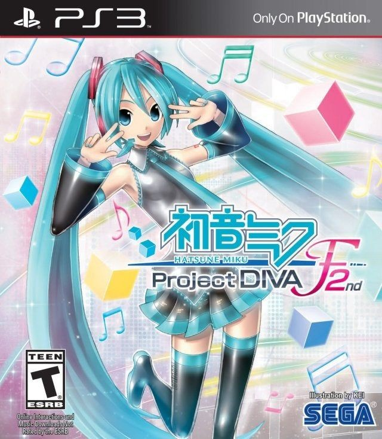
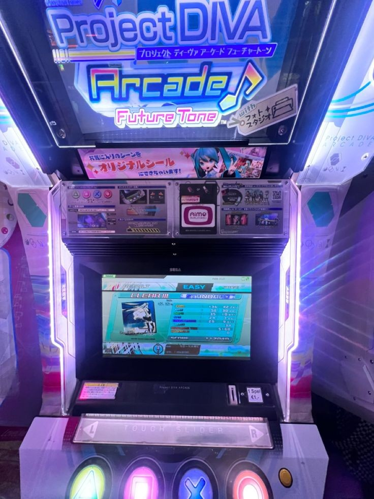
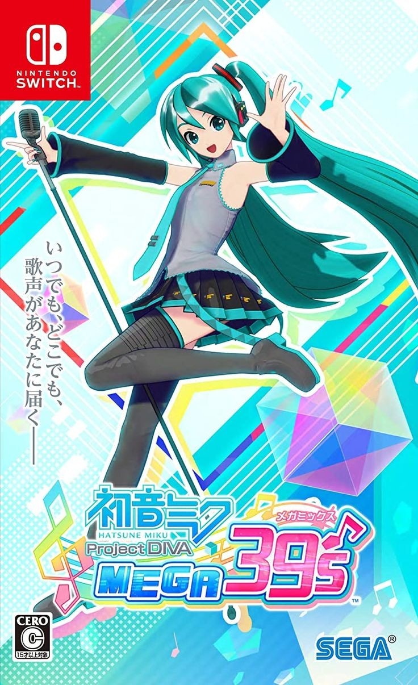
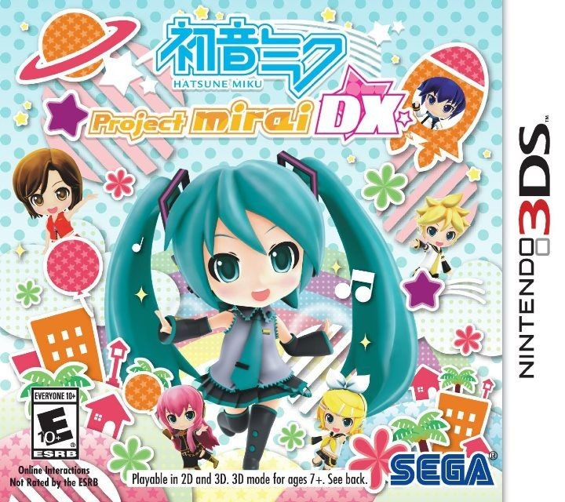
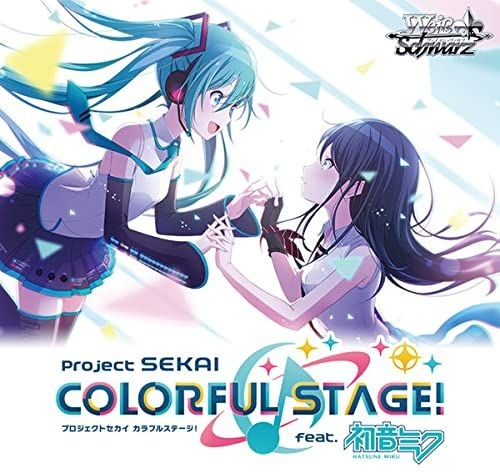
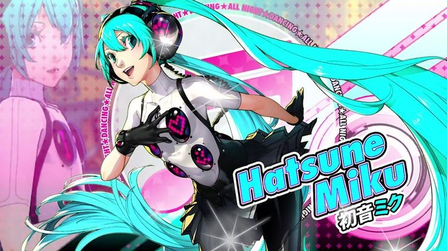

Project DIVA
"Hatsune Miku: Project DIVA" é uma série de jogos de ritmo desenvolvida pela SEGA. Os jogadores acompanham Hatsune Miku e outros Vocaloids enquanto eles realizam performances musicais, sincronizando inputs com a batida das músicas.
- Project DIVA F: Lançado para PS3 e PS Vita.
- Project DIVA Arcade: Versão para arcade com tela sensível ao toque.
- Project DIVA MegaMix: Lançado para Nintendo Switch, com gráficos em estilo cel-shading.
Project DIVA F

Project DIVA Arcade

Project DIVA MegaMix

Outros Jogos
Além de "Project DIVA", Hatsune Miku também apareceu em outros jogos e colaborações:
- Mirai DX: Um jogo de ritmo com gráficos super deformed, lançado para Nintendo 3DS.
- Project SEKAI: Um jogo de ritmo mobile que mistura Vocaloids e personagens humanos.
- Colaborações: Miku também apareceu em jogos como "Just Dance" e "Persona 4: Dancing All Night".
Mirai DX

Project SEKAI

Colaboração

Persona 4